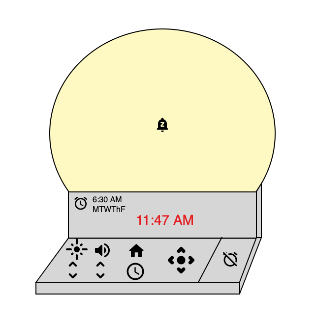
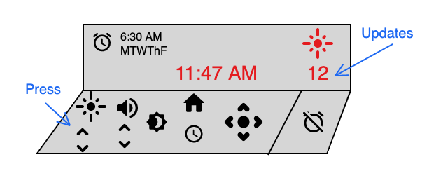
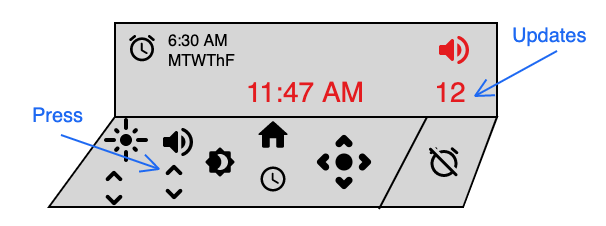
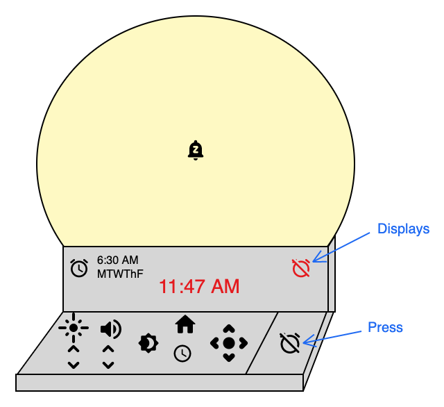
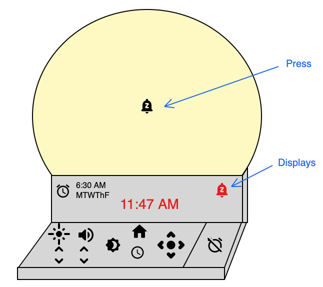
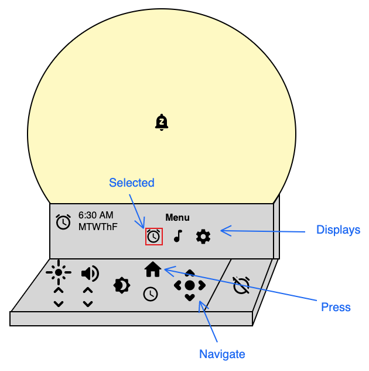
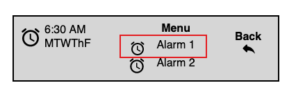
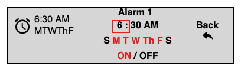

Problem
The Philips SmartSleep Wake-up Light HF3520/60 simulates sunrise to wake users gradually—but despite being recommended by Wirecutter, Amazon reviews reveal significant usability problems. The device has no companion app; redesign focused on the physical interface alone.
Common tasks include setting alarms, choosing sounds, snoozing, turning off alarms and lights, using the sunset feature, and adjusting volume and brightness—often while half-asleep, with light in your face, and a partner asking you to turn it off.
Research — review analysis
Needfinding analyzed the top 100 critical Amazon reviews, categorizing each into 41 complaint types. Design-relevant findings (excluding durability/price complaints outside scope):
- 43 reviews: buttons small, unintuitive, hard to reach, or hard to identify
- 24 reviews: difficult setup / steep learning curve
- Context blindness: buttons manageable by day, unusable when just woken up
- 10 reviews: hard to turn off alarm; 3 hard to snooze; 6 easy to press wrong button
- 5 reviews: turning off alarm doesn't turn off light—should be one action
- 10 reviews: device easy to knock over, triggering accidental button presses
- Missing features: no alarm reset button, no auto time sync, limited sound options
Users want to "set and forget"—customize weekly schedules, adjust brightness, and operate the device reliably without re-learning hidden button combinations.
Heuristic evaluation
What works: Physical buttons as affordances; alarm icons on display confirm state; brightness/volume shown as numeric values (bridging gulf of evaluation); icon-based controls for language flexibility; discoverable menu system with low-stakes exploration.
What doesn't:
- Alarm time requires rim button + face buttons + Select—a high learning curve for a common task
- Snooze-looking emoji button actually triggers sunset (mapping failure)
- Sunrise duration requires hidden two-button hold—not discoverable (expert blindspot)
- Rim buttons invisible from front → high working memory load and gulf of execution
- Volume adjustment requires flipping device to press button, then back to read display
Redesign
Redesign focused on four core tasks: set up an alarm, turn off an alarm, snooze, and adjust brightness/volume. Key changes:
- Separated form factors: semicircular light above a dedicated menu panel—all controls visible from the front, no hidden rim buttons
- Snooze via light face: tap the light surface (snooze icon) to snooze; dedicated alarm-off button with clear display feedback
- Structured menu navigation: home/menu → alarm settings → select alarm → edit time, recurring days, on/off—with arrow keys and visible selection state
- Live feedback: brightness/volume changes show numeric values and icons in the display while adjusting, then fade after a few seconds
- Stability: heavier base to prevent knock-over and accidental presses (accessibility for tremors/mobility issues)
- Alarm reset: dedicated reset action with clear visual confirmation
Full mockups are below and in the final report.
Redesign mockups








Reflection
Review analysis surfaced problems invisible in product marketing—a device praised by reviewers fails in the specific context of use (groggy, lit room, partner pressure). That's a different research signal than interviews would provide: volume at scale, but without user narrative depth.
The original design's expert blindspot—hidden button combos for sunrise duration— is exactly the kind of pattern that creates capability gaps: users conclude a feature doesn't exist because they can't discover it. The redesign prioritizes discoverability and front-facing controls over aesthetic minimalism.
Artifacts
Complete HCI design lifecycle report with review analysis, heuristic evaluation, and redesign mockups.